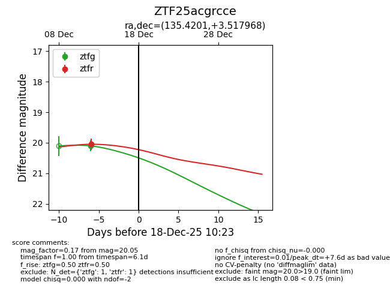
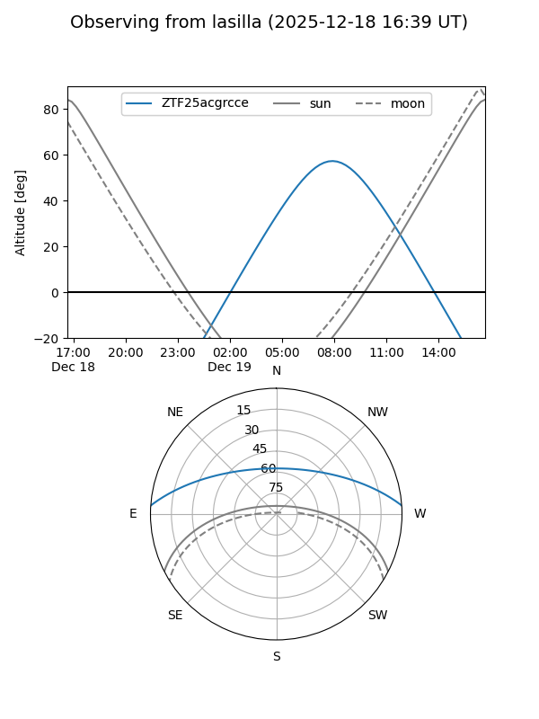
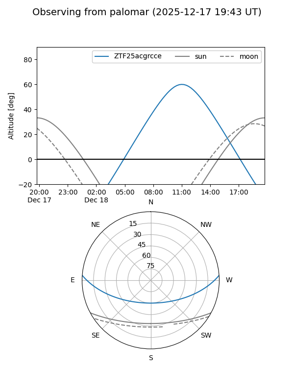

ZTF25acgrcce
Target ZTF25acgrcce at 2025-12-18 11:18
Aliases and brokers:
FINK: fink-portal.org/ZTF25acgrcce
Lasair: lasair-ztf.lsst.ac.uk/objects/ZTF25acgrcce
ALeRCE: alerce.online/object/ZTF25acgrcce
alt names
ZTF25acgrcce (ztf,fink_ztf)
Coordinates:
equatorial (ra, dec) = 135.4201,+3.51797
equatorial (HMS+DMS) = 09:01:40.83,+03:31:04.69
galactic (l, b) = (225.6807,+30.40185)
Photometry
last ztfg=20.10, ztfr=20.05
1 ztfg, 1 ztfr detections
Lightcurve

Visibility


Additional plots